THE TAPES · 28 SEP
Mon 28 Sep 2026 · Hub branch candidate/tapes-20260928 off hub/release-20260923 @ d31504a · not deployed (the coordinator deploys) · nothing written to any database
1 · Every tape on the Hub, side by side
| Tape | Where | What it shows | How it moves | Flash rules | Data, refresh |
|---|---|---|---|---|---|
| EVENTS → (top tape) | Dashboard, the strip under the SCINTILLA header (where the company bar was) | US economic releases (high/medium importance, M2; no oil stocks, auctions, mortgage surveys) and earnings of the names the Hub tracks. This week so far + next 7 days. A NOW marker where the past ends. | Scrolls right to left at 45 px/s, opens just before NOW, pauses under the mouse. NEXT sits still at its right-hand end: 3 upcoming releases with countdowns; a heavy day collapses to dots + a count; results slide in on the left. | Releases: still until the hour before, breathe (2.4 s) inside it, tighten (1.1 s) inside 10 min, hard pulse (0.38 s) at the minute. NEXT also glows through the one glow every 20 s / 6 s / 2 s in the last 15 min / 5 min / release minute. Earnings before today's change: no countdown at all; a report due TODAY breathed all day; a result beyond its own usual surprise wears ◆ and glows once. Now: earnings follow the release rules (see 2). | econ_calendar (one read per 10 min; every minute from one minute before a release to 15 after, until the number lands) + earnings_events (one read per 10 min). Repaints every 15 s. |
| EARNINGS → (earnings room tape) | Top of the EVENTS (earnings) room | Before: the bottom EARNINGS band drawn again at 11 px (3 weeks ahead, "IN 15 DAYS JPM"). Now: the concise tape: 7 days, "● WED AMC MU", NOW marker, and when the week is thin, the next 4 reports under LATER. | Same 45 px/s scroll. Now with a NEXT queue on the right (MU WED AMC in 2d · NKE THU AMC in 3d). | Now: the release rules, at each report's slot. Before: today's names breathed all day; ◆ on a wild result. | Same earnings read as the bottom band (no new read). Repaints every 15 s. |
| Season slider | Earnings room, under its tabs | Bars of reports per day/week/month, TODAY line. | Static timeline; you scroll or zoom it. Not a scrolling tape. | None. | earnings_events, the room's own read. Untouched. |
| MACRO → | Bottom bands (fold to a thin lip after 3 s; mouse at the bottom brings them back) | SPY, QQQ, IWM, SMH, GLD, TLT, NVDA, COIN: price and day change, green/red. | 45 px/s scroll; numbers patched in place. | A changed number glows once. | live_quotes + the provider's own quotes, every 45 s. |
| ALL → | Bottom bands | The 30 biggest movers of the tracked names. | 45 px/s scroll. | A changed number glows once. | Same read as MACRO, every 45 s. |
| ECON → | Bottom bands | "WEEK OF …" then every watched US release of the week (Mon–Sun; at the weekend it rolls to the week ahead), NOW marker, results in the calendar's colours. | 45 px/s scroll, opens on today. No NEXT. | The release rules (same as EVENTS). | econ_calendar, same one read. Every 15 s. |
| EARNINGS → (bottom band) | Bottom bands | This week + 3 weeks ahead: "WED MU", "IN 10 DAYS PEP"; estimates on the last day; results with ◆. | 45 px/s scroll. No NEXT. | A report due TODAY breathes all day; ◆ glow on a wild result. | earnings_events, 10 min. |
| SCINTILLAS line | Dashboard, under the EVENTS tape | Today's count and the newest one in words. | Static line. | The newest one glows once. | scintillas, once a minute. |
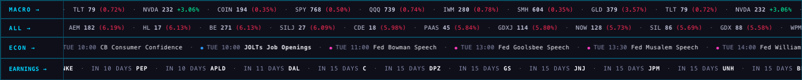
NEW concise earnings tape vs the BOTTOM earnings band
NEW · the earnings room's tape (with its NEXT)
OLD · the bottom EARNINGS band
| NEW concise tape | OLD bottom band | |
|---|---|---|
| Content | This week so far + next 7 days (today: MU, NKE). If fewer than 6, the next 4 after that under LATER (PEP, APLD, DAL, C) and "+22 more by Oct 19". | This week + 21 days ahead: 28 names on the loop today. |
| Density | 6 names on one loop, 1,246 px long [MEASURED]. Every name carries its day AND its slot ("WED AMC"). | 28 names, 3,225 px long [MEASURED]. Most items read "IN 15 DAYS …"; the slot is only said on the last day. |
| Readability | 11 px text, same look as the economic items; ticker in bold. | 9 px text; "IN 15 DAYS" repeated many times before a ticker. |
| Behaviour | Release rules at the report's slot; NOW marker; NEXT queue with countdowns (in the room). | Today's names breathe all day, nothing counts down, no NEXT. |
| Same in both | Tap a ticker → its company page. A result beyond its own usual surprise wears ◆ and glows. Same one read of earnings_events. | |
My read: the new one says more per glance (day + slot on every name, countdown in NEXT); the old one shows further ahead. The LATER part is there so the new one does not lose the "what's coming after this week" that the old one gave.
2 · The earnings tapes at the top now behave like the economic tape
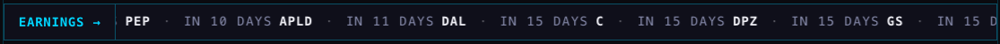
The flash, proved on a set clock
I set the headless browser's clock to Wednesday 30 Sep (MU reports after the close) and read which animation each dot was running.
mn-breathe 2.4s]. NKE (tomorrow) is still [MEASURED: none].mn-hard 0.38s].- Item drawing: dot · day + BMO/AMC (or the stated time) · ticker · once reported, EPS vs estimate in green beat / yellow in line / red miss, and ◆ when beyond that name's usual surprise. The dot is gold, a colour no economic category uses.
- States: the release's four, counted to the report's slot: before the open = 07:00 ET, after the close = 16:05 ET, or the stated time. Pulse at the slot for up to an hour while no result is stored, then faded.
- A report with no announced time never flashes — there is no minute to count to. It sits still until its day is over.
- NEXT: the economic NEXT's own code with earnings fed in: 3 names; 3+ the same day become a swarm of dots "4 report · in 2d"; a heavy day up to 3 days out is a quiet cluster; a result this page has just seen sits on the left with ✕. It flashes on the same 2-second clock as the economic NEXT. Tap a name → its company; tap a swarm → that week in the room.
- Where NEXT is: in the earnings room only. The EVENTS tape's NEXT stays economic-only, as today.
The old behaviour, one switch away
?ernstyle=old on the address: the EVENTS tape draws earnings the 27 Sep way ("WED MU").ERN_ECON_STYLE_DEFAULT = false.3 · The swap: the new concise tape at the bottom (switch OFF)
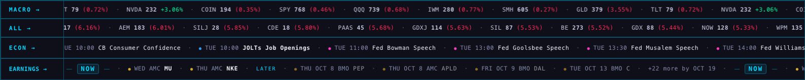
?ernbottom=new): the bottom EARNINGS band is the concise tape — NOW · ● WED AMC MU · ● THU AMC NKE · LATER · PEP, APLD, DAL, C · +22 more by Oct 19. No NEXT at the bottom (the ECON band beside it has none either).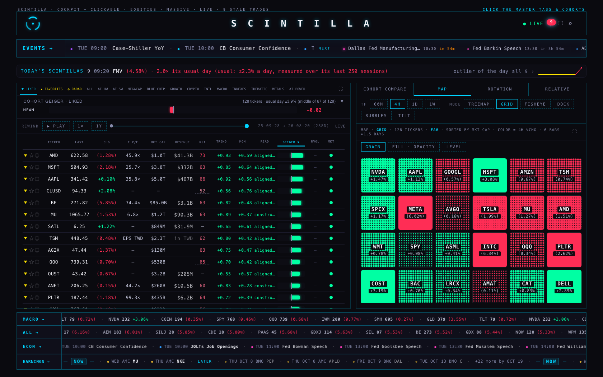
To turn it on for everyone: ERN_BOTTOM_NEW_DEFAULT = true in index.html (one word). To look first without changing anything: add ?ernbottom=new to the Hub address.
4 · TODAY'S SCINTILLAS on a closed day
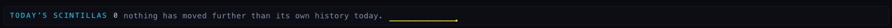
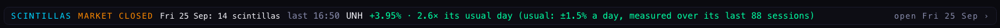
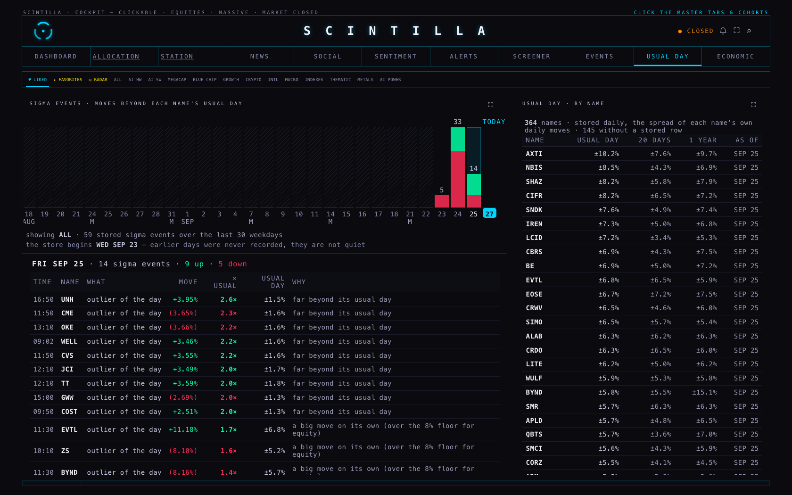
- When: a weekend, a market holiday (the page's own NYSE calendar), or a weekday before 09:30 ET ("BEFORE THE OPEN"). Once the session has opened, an empty day still says an honest "0 · nothing has moved…".
- What is counted: moves beyond a name's usual day, earnings surprises and economic surprises — the same as USUAL DAY, so the number matches where the tap lands. "About to print" notices are left out (Friday had 25 rows in all; 14 are events with a size).
5 · Two fixes after review
An independent reviewer found two things my first version got wrong. Both are fixed and each has a test.
Fix 1: a big earnings surprise stopped glowing on the new tapes. The page stores a "scintilla" when a company's result is far outside its usual surprise, and that name's ticker glows on every earnings tape. The new drawing gave the tape items a different label, so the glow only found the old bottom band. With the bottom swap switched on, it found nothing. It now finds the new items on the EVENTS tape, the earnings room tape and the swapped bottom band, and it runs again whenever one of them redraws.
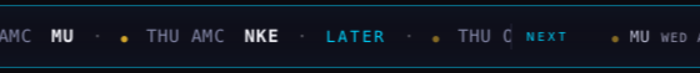
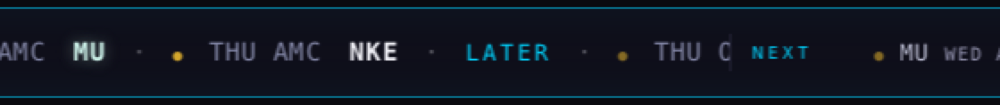
?ernbottom=new it lands on the EVENTS tape and the new bottom tape, where before it landed nowhere].Fix 2: a report with no announced time could still flash in NEXT. If the result of a report with no announced time was already stored, NEXT kept listing it as "time not set · today". From 23:00 New York time it breathed and then tightened, as if it were about to report. Now it lands the moment a result is stored: the result sits on the left with ✕, as a release's number does, and after a quarter of an hour it drops off. Also, a group of three or more reports with no announced time on the same day never glows.
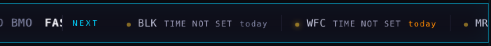
s-soon, mn-breathe; at 23:55 ET it tightens to near].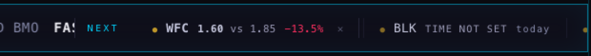
How this was checked: a local copy of the page in a headless browser, with the chart service's cross-origin check relaxed. The WFC result and the MU surprise were added in the browser for the test only. Nothing was written to the database.
Phone (390 wide)
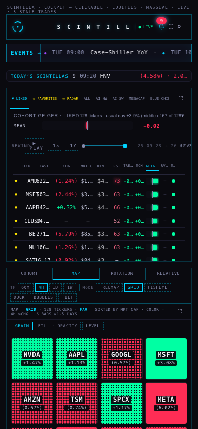
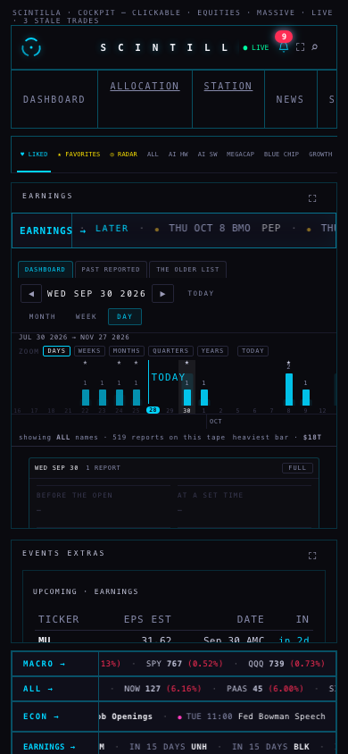
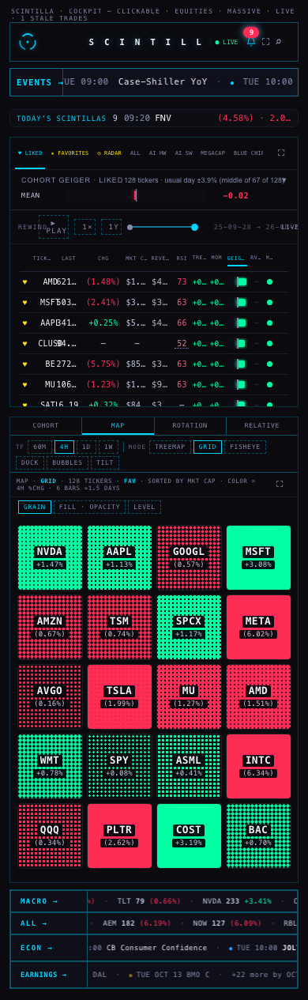
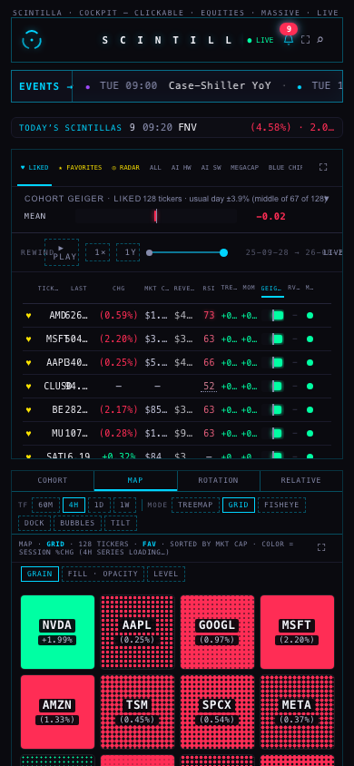
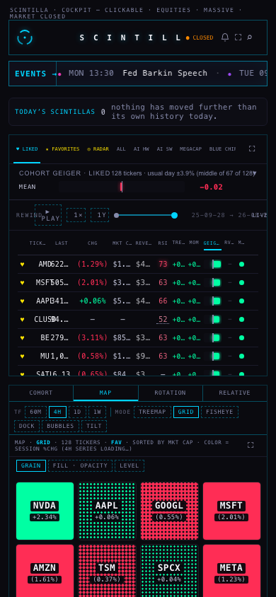
Where the numbers come from
| On screen | Source (read only) |
|---|---|
| Earnings on every tape and NEXT | earnings_events (date, report_time, eps_actual, eps_estimate, surprise_pct) — the bottom band's existing one read. Nothing new is read. |
| Releases | econ_calendar, the existing one read. |
| BMO/AMC and times | report_time as stored. BMO is placed at 07:00 ET, AMC at 16:05 ET for the countdown only. |
| Last session's scintillas | scintillas (the newest 300 rows, the strip's existing read); the trading-day calendar already on the page. |
What could be wrong
- The slot times are a convention, not the company's minute. 07:00 and 16:05 ET decide when an earnings dot starts breathing. A company that reports at 06:00 or 16:30 will pulse a little early or late.
- "New concise tape": your 28 Sep notes file (
handoffs/ALAN-NOTES-20260928.md) was not on disk, so I took "the new concise one" to mean the earnings tape at the top, drawn the new way. If you meant something else, tell me which one. - A short loop repeats. On a quiet week the tape repeats itself to fill the width (the rule for every tape since 23 Sep), so NOW can appear twice on a wide screen. LATER keeps the repeat informative.
- A pulse with no result lasts up to an hour after the slot (the release rule). Earnings results can arrive later than that in our store; after an hour the dot just goes quiet until the result lands.
- Test clock. The flash and closed-day pictures were taken with the headless browser's clock set to Wed 30 Sep 15:30 / 16:07 ET and Sun 27 Sep 14:00 ET. The data was live (read today), so those pictures mix a pretend clock with today's rows.
- Local screenshots: I served the branch from this MacBook and relaxed the browser's cross-origin check in the headless test browser, because the data services only answer scintillahub.ai. No window opened on screen; every browser was closed.
- The bottom bands fold away after 3 s; in the pictures I held them open so they could be seen.
What I did not do
- No deploy, no database write, no schedule, nothing paid. The branch is pushed; the coordinator merges and deploys.
- Did not turn the bottom swap on (your call).
- Did not put earnings into the EVENTS tape's NEXT (it stays economic-only, as today).
- Did not touch the season slider, PAST · REPORTED, the upcoming table, the economic room, or Indicator Lab.
- Tests: 1,110 run, 1,103 pass, 2 skipped, 5 fail — the same 5 that fail on production d31504a (Indicator Lab checkpoint, one age function, saved review charts, readiness, xfeed-publish). 11 new tests cover this work; 1 older test's count moved from 4 to 5 guarded uses of the same surprise judgement.
Your decisions
1 · The bottom swap. Recommendation: turn it ON — the concise tape reads faster and carries the slot on every name; LATER still names what's next. Alternative: keep the old 3-week band.
2 · Earnings in the EVENTS tape's NEXT. Recommendation: keep it economic-only — the room has its own earnings NEXT, and mixing would push releases out of the three slots. Alternative: one queue for both.
3 · The earnings dot colour (gold). Recommendation: keep gold — no economic category uses it, so an earnings item is told apart at a glance. Alternative: name another colour.